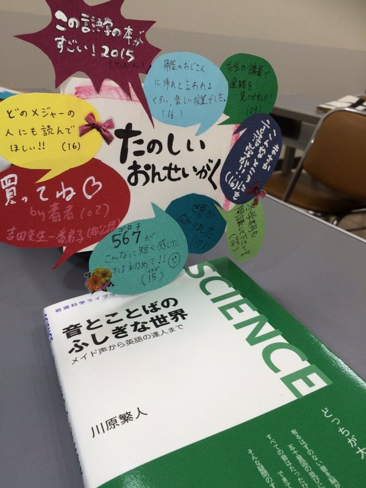
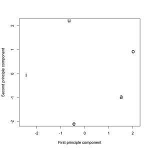
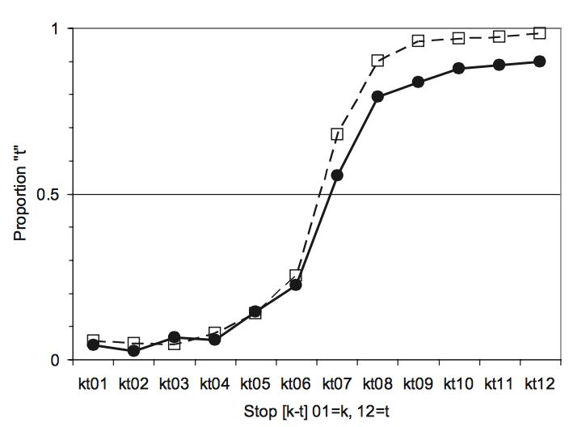
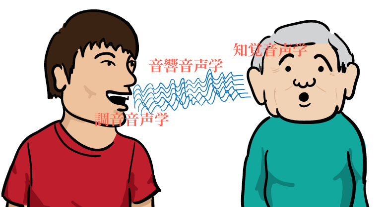
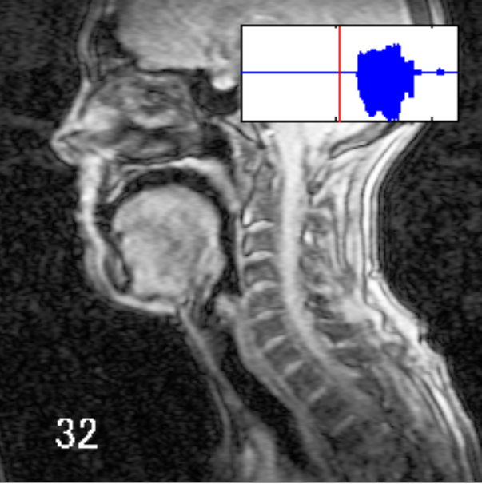
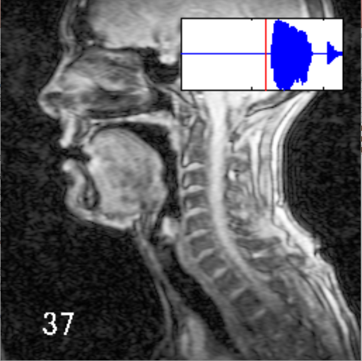
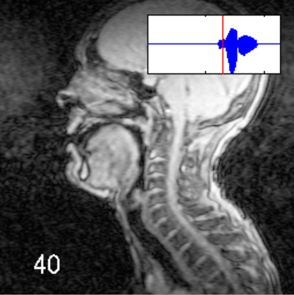
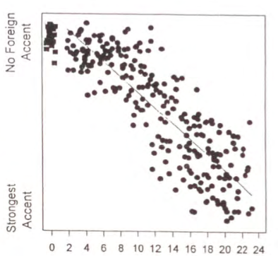

本ページについて
岩波書店から発売された「音とことばのふしぎな世界」の補足事項をまとめるページです。ページ数の都合で省略した部分や、もし教材で取り上げるていただいた場合に使える練習問題などを載せていきたいと思います。授業で使えるお勧めの問題などありましたら、著者までご連絡ください。（あくまで議論用の問題が多いので、自習には難しいものもあります。）
このページは随時更新していく予定です。
専用のtwitterアカウントも作りました。音声学に関する質問、文句、議論などなど何でも受け付けます。多分。
川原繁人 (2015) 「音とことばのふしぎな世界」. 岩波サイエンスライブラリー 244. 東京 : 岩波書店.
このページは随時更新していく予定です。
専用のtwitterアカウントも作りました。音声学に関する質問、文句、議論などなど何でも受け付けます。多分。

川原繁人 (2015) 「音とことばのふしぎな世界」. 岩波サイエンスライブラリー 244. 東京 : 岩波書店.
練習問題・議論ポイント
- 1章：ほかの音象徴の例を自分で考えてみましょう。もしある音にある特定のイメージが感じられたら、先生とその理由について話し合ってみましょう。音声学的な説明がつくでしょうか？
- 1章：なぜ「きゃりーぱみゅぱみゅ」は「ぎゃりーばみゅばみゅ」という名前を使わなかったのでしょう？また「浜田ばみゅばみゅ」という名付けについて、音象徴の観点から考えてみましょう。
- 1章：参考文献(p.109)にでているクラテュロスを実際に読んでみましょう。古代ギリシャ人が「音のイメージ」に関してどのような考え方をもっていたか議論しましょう。
- 1章(p.9-12): 濁音の発音のメカニズムをもう一回読んでみましょう。ここで書かれていることが正しいならば、「ば」、「だ」、「が」で発音の難しさに違いがでるはずです。さてどの音が一番難しいでしょう？（ヒント：狭い空間ほど、気圧が上がりやすいです。）
また、喉仏に手を当てて、[abbbbbbbba]と[apppppppa]と発音してみましょう。どちらかで喉仏が下がるのを感じられますか？なぜ喉仏が下がるのか考えてみましょう。
- 1章(p.9-12): 本書の濁音のメカニズムの説明では、摩擦音の濁音の話を省略してしまいました。｢ざ」とか「じゃ」ですね。摩擦音だと、口は閉じてないから、口腔内の気圧は上がりにくいのでは？と思うかもしれません。でも、濁音摩擦音は発音が難しいです。なぜだか考えてみましょう（ヒント：摩擦を起こすために必要なことはなんでしょう？）
- 1章(p.15)：日本語でも魅力的な名前はあるのでしょうか？性別と阻害音・共鳴音の関係はどうでしょうか？クラスのみんなで議論してみましょう。
- 2章(p.22)：調音点を感じるには以下のような方法もあります。「す」の発音の口の形をして、息を吸い込んでみてください（吐くのではなくて！）。口蓋のあるところで冷たくなる部分がありませんか？そこが狭めが起きているところです。次に「し」の発音の形をして、息を吸い込んでみましょう。調音点の違いを感じますか？どちらが後ろですか？他の子音でも試してみましょう。
- 2章(p.22)：ある８ヶ月の子供はまだ「ぱ、ば、ま、わ」しか発音できません。この子はどんな子音を発音できると言えるでしょう？
- 2章(p.26)：阻害音と共鳴音の違いについて。英語には、形容詞の後ろにつけて動詞をつくる”-en”という接辞があります。例えば、dark-en, soft-en, whit-enなどです。できるだけ関連する例をあげてみましょう。次に意味的に似ているけど、-enがつけられない形容詞を探してみましょう。たとえばwhit-enやredd-enは言えるのに、green-enやyellow-enは言えません。英語の母語話者に尋ねてみるのもいいですね。色に関する形容詞がいいかもしれません。なにかパターンが見つかりますか？
- 2章(p.30-31)：音声的に「似た音」っていうのの説明にラップの韻を使いましたが、早口言葉でも似たような分析ができます。日本語や英語の早口言葉の例を実際に分析してみましょう。
- 2章(p.32-34):日本語のダジャレの中で、母音がちょっとだけ違っている単語が組み合わさっている場合があります。たとえば「ハイデッガーの前世はハエでっか？」。「ハイデッガー」の「い」と「ハエ」の「え」が微妙に異なっていますよね？他には、「サンダルが3ドルだ」みたいなのもあります。「あ」と「お」がペアリングされています。こういう例を見つけてきて、どんな母音のペアがこのようなダジャレに使われやすいか考えてみましょう。
- 2章(p.32-34):母音が二つ並ぶと一つになってしまう例が他にもあります。たとえば、「ねむい」は「ねみー」と言ったりしますね。他の母音のペアだとどうなるでしょうか？なにか一定のパターンが見つかるでしょうか？
- 2章(p.34)：インターネットで顔文字の例をたくさん探してみましょう。どのようなパターンが見つかりますか？口の開きや丸まり具合から分析してみましょう。一例：「お～ｏ(⌒0⌒)ｏは～♪＼(⌒▽⌒)／」
- 1,2章：日本語と英語で動物の鳴き声を比較してみましょう。ワンワンとwoof, woof。ニャーニャーとmeow, meow。モーモーとmoo, moo。音声学的に似ていると言えるでしょうか？
- 3章(p.39): IPAを使って日本語の単語を書き取ってみましょう。英語などの他の言語でも挑戦してみましょう。先生にチェックしてもらうといいかもしれません。
- 3章(p.39): 下の図は、[mil]と[mal]の実験を行ったSapir先生の別の著作の一部をIPAで書き取ったものです。英語に直せるでしょうか？

- 3章(p.44): 下の図は日本語の「北風と太陽」をIPAで書き取ったものです。（下矢印はアクセント、｜｜はフレーズの区切りを表します）。日本語として読んでみましょう。（出典: Hiki et al. (2011) A pan phonetic version of the text of “the north wind and the sun” for the illustration of the IPA of Japanese (Tokyo dialect) consonants, ICPhS 2011.）

- 3章(p.44): 英語以外の外国語を勉強している方は、その言語のIPAで書かれた「北風と太陽」を見つけて読んでみましょう。
- 3章(p.45)：母音だけで作る長い文を紹介しました。「大エイを上へおいおい追い合おう」です。もっと長い文は作れますか？みんなでどれだけ長い文を作れるか競争してみても面白いかもしれません。
- 4章(p.56)：下の図はEMAでアラビア語の[ksbul]という単語を発音したときのグラフです（出典：Shaw, J. and Gafos, A. (2015), 'Stochastic time models of syllable structure', PLOS One, vol 10, no 5 .）。

それぞれの調音器官がどう動いているか分析してみましょう。
- 4章(p.56)：下の図は現在(2016年）慶應で行われているEMA実験の結果の一つです。青い線が「主題歌」の「しゅだ(shuda)」の部分、赤の線が「主体性」の「しゅた(shuta)」の部分の発音を表しています。また、どちらの単語も「オッケー」というフレーズが前に来ているため、舌の動きは[e]で始まります。まず、母音や子音の調音の仕方を確認してみましょう。また、本書では取り上げませんでしたが、「主体性」の「しゅ」の母音はいわゆる「無声化」を起こします。赤い線と青い線を比べて、無声化と舌の動きの関係を分析してみましょう。

- 5章(p.59)：濁音でかつ促音がついている音は発音が難しい、という話をしました。では、「バッグ」や「ビッグ」などの単語が「バック」や「ビック」と発音されてしまうことはあるでしょうか？促音から濁音が取れてしまう例を考えてみましょう。どんなときに濁点がとれてしまうでしょうか？
- 5章(p.61-63)：下にEPGの動画が２つアップロードしてあります。発音されている音とEPGのパターンを比べて分析してみましょう。単音と促音の違いはどのように現れているでしょうか？二人の話者に違いはあるでしょうか？
- 5章(p.73) 再び「ハイデッガーの前世はハエでっか？」のダジャレの例に戻りましょう。下の図を見てください。この図は「ダジャレにおける、それぞれの母音の組み合わせやすさの地図」になっています。距離が近いほどダジャレで組み合わされやすいということです。(具体的な分析方法は難しいので無視してください。) 本書の図5-6と比べてみましょう。

（出典：Kawahara, Shigeto and Kazuko Shinohara (2010) Calculating vocalic similarity through puns. 音声研究 13(3): 101-110. ）
- 5章(p.79)：下の図はプロの声優さんに、「萌メイド声」「地声」「ツンメイド声」で発音してもらったイントネーションを分析したものです。本書にある「メイド越え vs. 地声」の比較を参考に分析してみましょう。

- 6章(p.87-99)。知覚の補完効果についてもう一つ例を考えてみましょう。ある実験では[k]から[t]に少しずつ近づく音を作りました。その音を、[s]の後と[ʃ]の後において、日本人話者に[k]か[t]か判断してもらいました。下の図は、その結果を示したものです。x軸では、右に行くに従って[k]から[t]に変わっていきます。y軸は[t]と答えた確率です。黒丸で示した線は[s]のあとに置かれた場合、白い四角示した線は[ʃ]のあとに置かれた場合です。知覚の補完効果を使って、このグラフを説明できるでしょうか？（ヒント：[ʃ]は[s]より後ろのほうで発音されます。）

（出典：Kingston, John, Kawahara, Shigeto, Daniel Mash and Della Chambless (2011) Auditory contrast versus compensation for coarticulation: Data from Japanese and English listeners. Language and Speech. 54(4): 496-522.. ）
- 7章(p.103)：なぜ自分の声を使うことが大事なのでしょう？一般的に知られているボーカロイドではダメなのでしょうか？難しいかもしれませんが、「自分の声を失う」ということを想像してみましょう。また、大事な人が「その人の声を失う」という状況になったとしたら、皆さんはどう感じるでしょうか？
補足事項
- TBS RADIO 夢★夢Engine！2016年1月16日放送。
- プロローグ。ページの都合で省いた、音声学３部門のイメージです。

- ２章(p.26)。「日本語のら行は弾き音であるから、接近音と見なすのは間違いである」という批判を想定していなかったわけではありません。脚注を入れようか本気で悩みましたが、入門書ですので断念しました。個人的には促音の振る舞いなどから、日本語の[r]を接近音とみなしてもいいのでは、と思っています。
- 4章。ページ数の都合で、調音点のMRI画像が一部省かれてしまいました。以下に[b], [d], [k]の画像を示します。発音は図4-2と同じアメリカ人の女性話者です。
[b]
[d]
[k]
- EMAのセンサーを捉えた動きの解説(NDI Wave)。緑の点一つ一つが口につけられたセンサーの動きを表している。被験者は著者（撮影：慶應義塾大学言文研ラボ、協力：Jason Shaw）。（注意：20MGです。）
- EMAのセンサーを捉えた動き(NDI Wave)。緑の点一つ一つが口につけられたセンサーの動きを表している（撮影：慶應義塾大学言文研ラボ、協力：Jason Shaw）。
- EPGの撮影風景。単音と促音の比較をオノマトペを使って測定している（撮影：慶應義塾大学言文研ラボ、協力：松井理直先生）。
- EPGの撮影風景2。単音と促音の比較をオノマトペを使って測定している（撮影：慶應義塾大学言文研ラボ、協力：松井理直先生、発音は著者）。
- ５章(p.69)。実際フーリエが音の解析そのものにフーリエ解析を行ったわけではないようです。本書では、そこのところをちょっとぼかして「数学的な基礎をフーリエが作った」としています。（ここら辺の歴史に関しては、勉強不足です。すみません）。
- 6章。「[ebuzo]の[u]は無声化するので、[ebuzo]は日本語では実際[ebzo]と発音されるのでは？」という批判を頂きましたが、有声の子音の隣では母音は無声化しません。また無声化したからといって、母音が削除されているとは限りません。EMAの実験では、調音運動を保っている無声化母音も存在することがわかっています。
- 6章(p.96-97)。「移住時の年齢」（x軸）と「どれくらい訛りがあるか（y軸）」の相関図。

(出典：Flege, J., Munro, M., & MacKay, I. (1996). Factors affecting the production of word-initial consonants in a second language. In R. Bayley & D. Preston (Eds) Second Language Acquisition and Linguistic Variation. Amsterdam: John Benjamins, Pp. 47-73.)
誤植
- p37.（誤）「オランダ人」＝＞（正）「ポルトガル人」
- p39.（誤）「Palatal（軟口蓋）」、「Velar（硬口蓋）」＝＞（正）「Palatal（硬口蓋）」、「Velar（軟口蓋）」
- p69.（誤）「赤」＝＞ （正）「黄色」
書評
- 大津由紀雄先生（慶應大学名誉教授・明海大学副学長）
- 村上陽一郎先生（東京大学名誉教授・国際基督教大学名誉教授）（毎日新聞）
- 岡ノ谷一夫先生（東京大学教授）（読売新聞）
- 相澤正夫先生先生（国立国語研究所）（『日本語学』2016年５月号）
- 金水敏先生（大阪大学）
- 松浦年男先生（北星大学）
- 小川 晋史先生（熊本県立大学）
- Jeff Moore君（上智大学院生）
- ジュンク堂様
- たけおんど様
- お世話になったヨガの先生
- 週刊ダイヤモンド」誌、
作家の瀬名秀明さん
- 増田斐那子先生（成蹊大学）